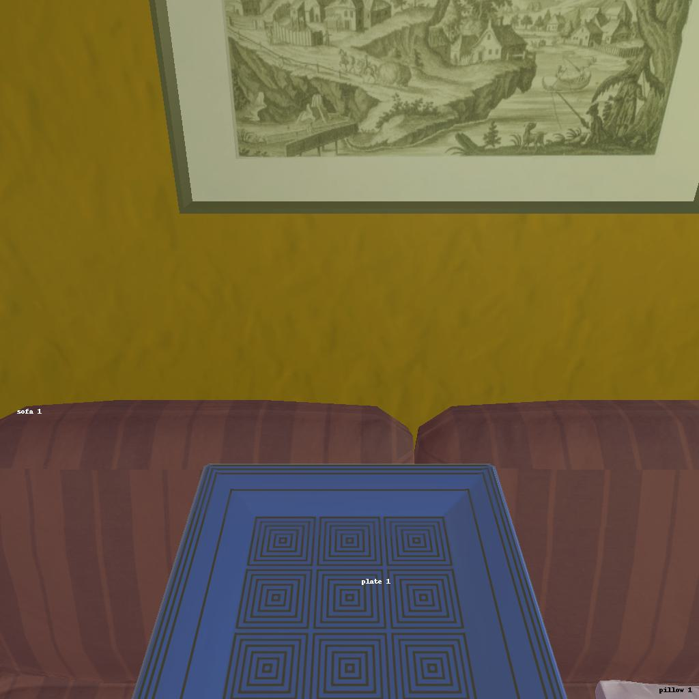

---------------------------------------------------------task: 3---------------------------------------------------------
--------------------------------------------------------------------------------------------------------------------------------------------------------------------
--------------------------------------------------------------------------------------------------------------------------------------------------------------------
Step:--------------------------------------------------------------------------17-------------------------------------------------------------------------------
----------------------------------------
VLM Prompt:
Image1:
**Instruction**
1. Analyze the provided image to identify all visible household objects, focusing on those relevant to the task description "look at plate under the floorlamp."
2. Use the analysis of the image and the task hint "The agent must find an object of the desired type, locate and turn on a light source with the desired object in-hand." to answer the question: what is the most reasonable action in the choices for the task description "look at plate under the floorlamp"?
4. Decide and write the answer using the template: The answer is: (i): , where i is the real number. If there is no desired object in the image, search every place based on **Initial Observation** to find the object. And if no one is exactly correct, choose a similar answer.
**Initial Observation**
You are in the middle of a room. Looking quickly around you, you can see armchair (1), garbagecan (1), tvstand (1), shelf (1-5), sofa (1), coffeetable (1), sidetable (1-2), drawer (1)
**Answer Choices**
(1): go to armchair 1
(2): go to garbagecan 1
(3): go to tvstand 1
(4): go to shelf 1
(5): go to shelf 2
(6): go to sofa 1
(7): go to coffeetable 1
(8): go to sidetable 1
(9): go to sidetable 2
(10): go to drawer 1
(11): go to shelf 3
(12): go to shelf 4
(13): go to shelf 5
(14): put plate 1 in/on sofa 1
(15): examine plate 1
(16): examine sofa 1
**Answer**
Let's think step by step by following the instructions.
----------------------------------------
----------------------------------------
Original Response:
First, we need to identify all visible household objects. In Image 1, we can see a sofa labeled "sofa 1," a plate labeled "plate 1," and a pillow labeled "pillow 1." However, the task description mentions looking at a plate under the floorlamp, and the floorlamp is not visible in the image provided.
Based on the Initial Observation, we know there are various objects in the room, such as armchair, garbagecan, tvstand, shelf, sofa, coffeetable, sidetable, and drawer. The task hint suggests that the agent must find an object of the desired type, which in this case is a plate, locate and turn on a light source with the desired object in-hand. Since we can see "plate 1" in the image, we can assume that this is the plate we need to interact with.
Considering the task description and the task hint, the most reasonable action would be to first pick up the plate and then find the floorlamp to look at it under the light, as instructed. However, none of the provided answer choices mention picking up the plate or locating a floorlamp.
Given the options available, the closest action that aligns with the task would be to examine the plate since it is the object of interest according to the task description. Therefore, the answer is:
(15): examine plate 1
This action would allow the agent to interact with the plate, and potentially, the next step would be to locate the floorlamp to complete the task.
----------------------------------------
----------------------------------------
>>> Refine Original VLM Response and Get Pure Action: No action
----------------------------------------
-----------------------------------------------------------------
Running time: 41.82622766494751 seconds
Total Money: 1.16547
-----------------------------------------------------------------
-----------------------------------------------------------------
Text Observation:Nothing happens.
-----------------------------------------------------------------
UNSUCCEED